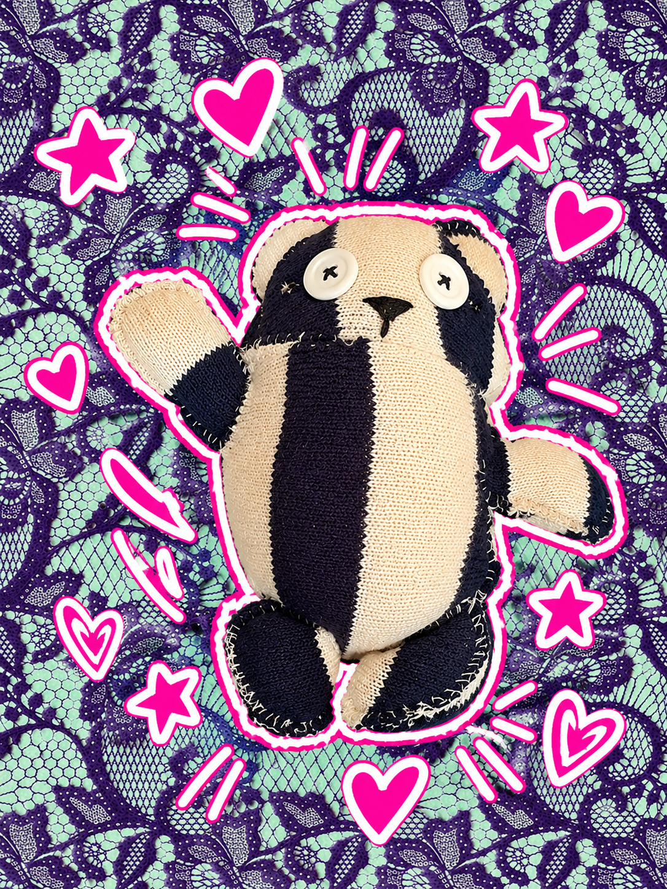

♡
✧
☯

GOOD VIBES ONLY ♡
♡ About Mumad
Mumad is a very peaceful panda who believes
that life is better when everyone gets along.
He's deeply into meditation and always tries
to stay calm, no matter what's happening.
He's a pacifist who avoids fighting and
arguments whenever possible. Instead of
getting angry, Mumad would rather sit down,
talk things out, and make a new friend.
He's thoughtful, patient, and always
welcoming to anyone who needs a little peace.
✿ His Personality
- Pacifist — believes in peace and nonviolence
- Super chill and laid-back
- Friendly and welcoming
- Patient and understanding
- Avoids conflict and arguments
- Loves making new friends
- Thoughtful and compassionate